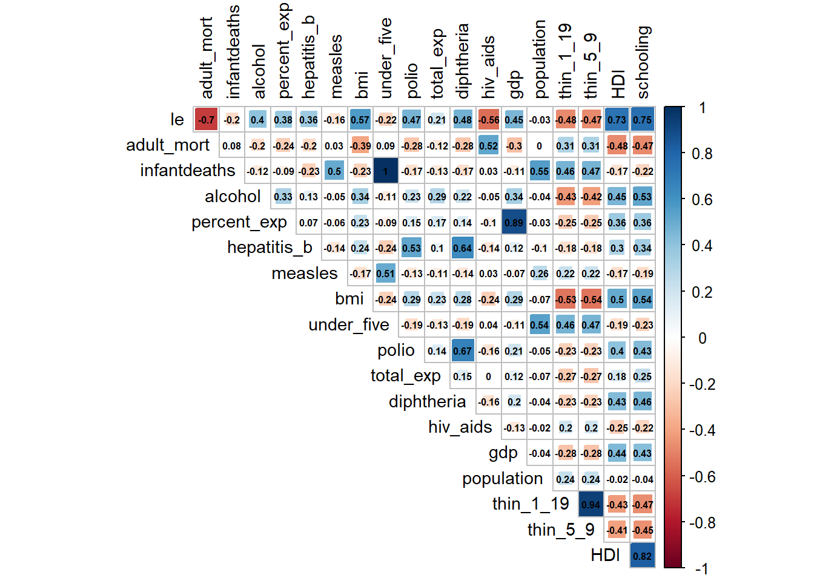
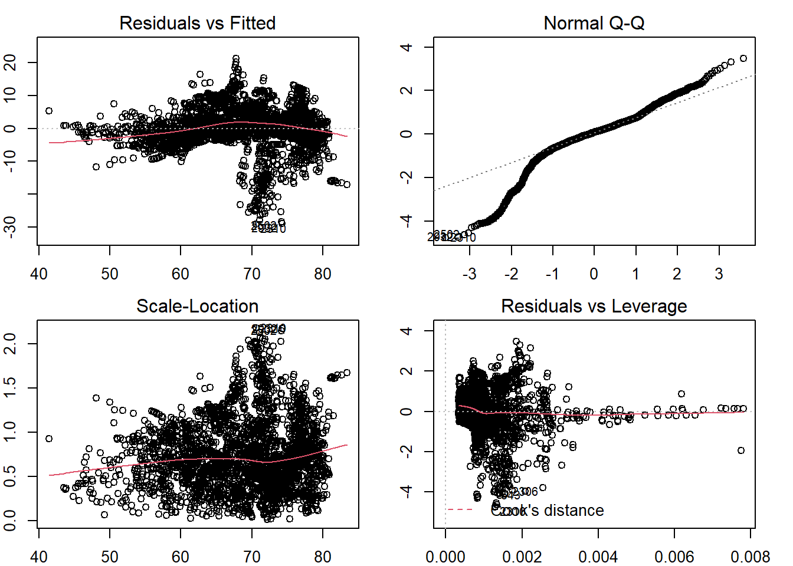
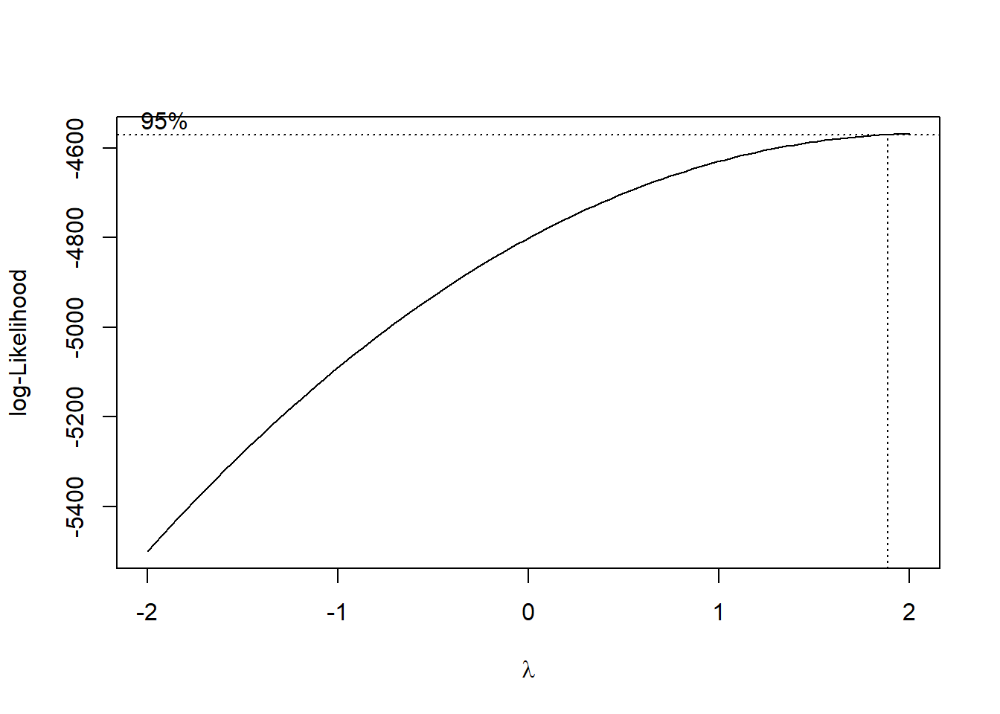
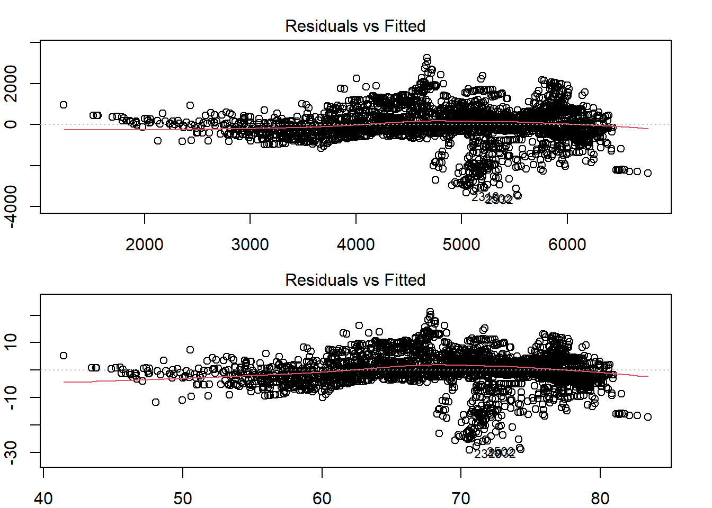
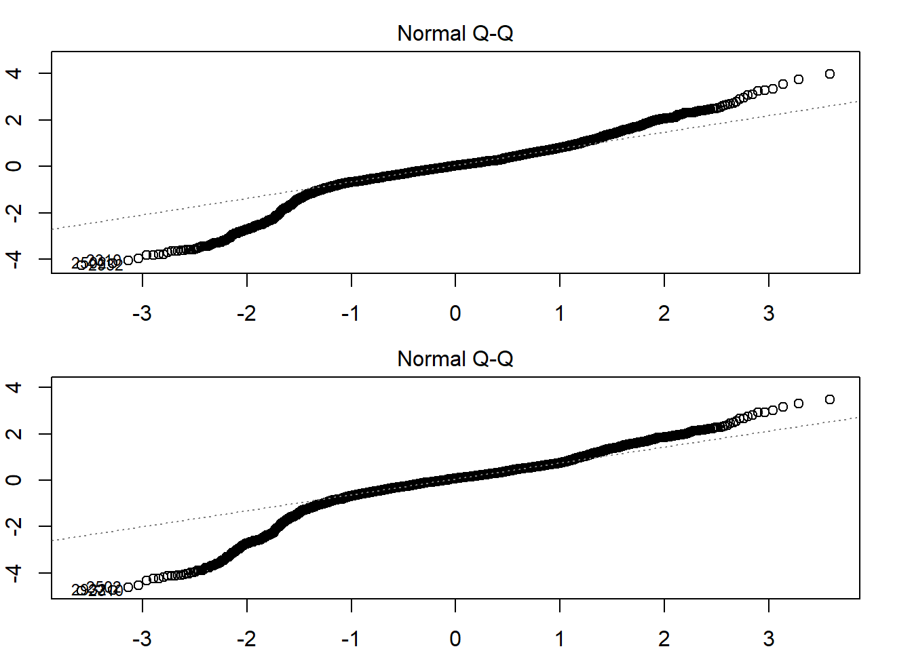
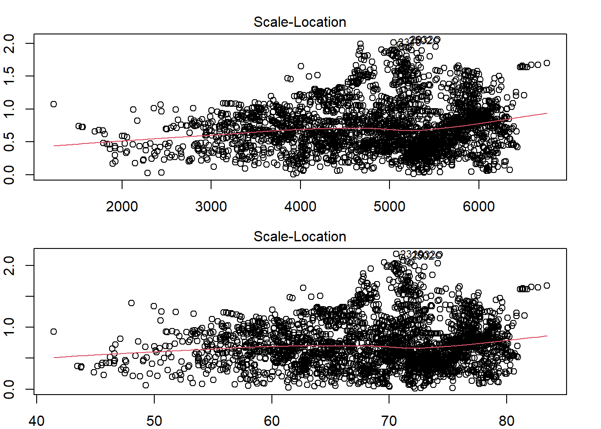
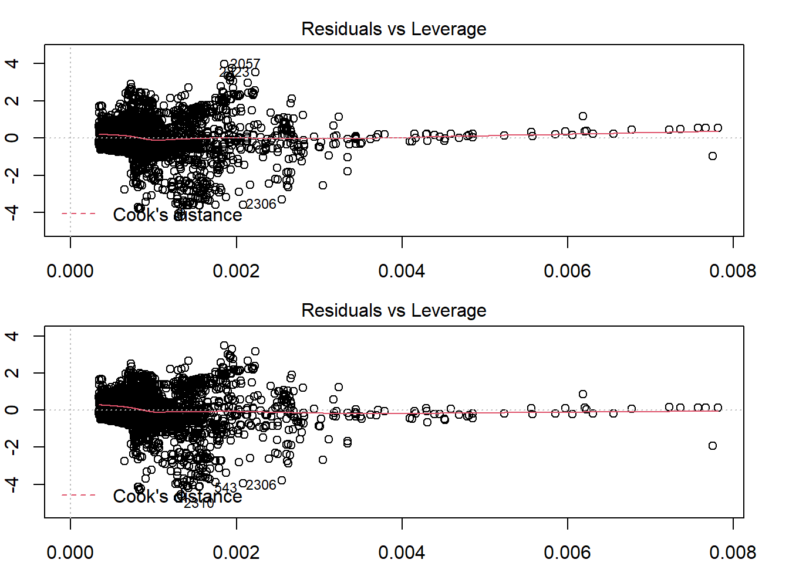
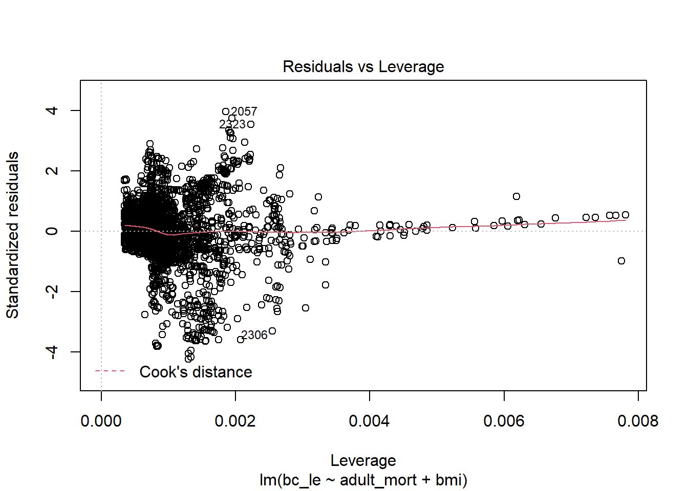
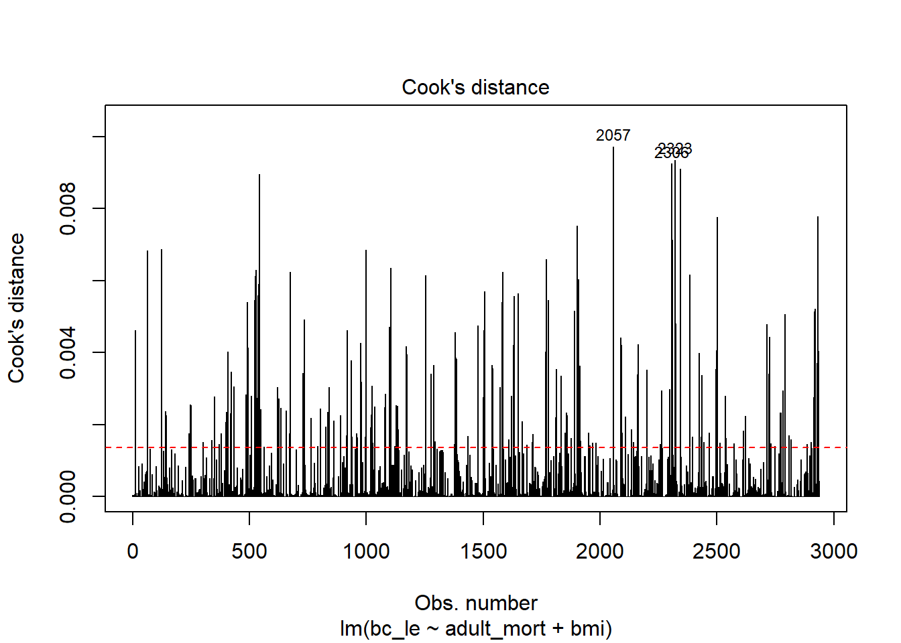
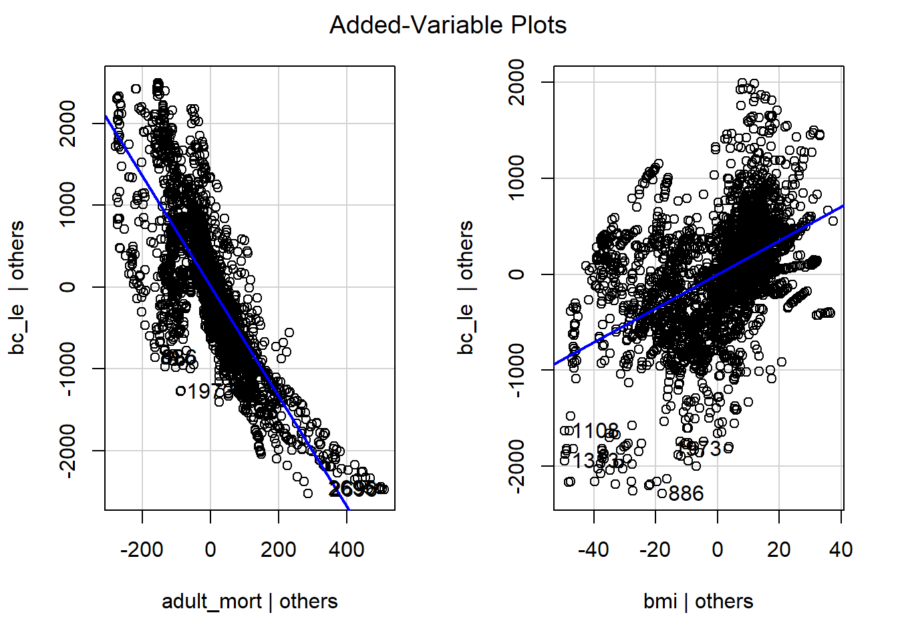

library(tidyverse)## -- Attaching packages --------------------------------------- tidyverse 1.3.1 --## v ggplot2 3.3.5 v purrr 0.3.4
## v tibble 3.1.4 v dplyr 1.0.7
## v tidyr 1.1.3 v stringr 1.4.0
## v readr 2.0.1 v forcats 0.5.1## -- Conflicts ------------------------------------------ tidyverse_conflicts() --
## x dplyr::filter() masks stats::filter()
## x dplyr::lag() masks stats::lag()library(MASS)##
## Attaching package: 'MASS'## The following object is masked from 'package:dplyr':
##
## selectlibrary(corrplot)## corrplot 0.92 loadedlibrary(performance) # vif
library(caret)## Loading required package: lattice##
## Attaching package: 'caret'## The following object is masked from 'package:purrr':
##
## liftlibrary(car)## Loading required package: carData##
## Attaching package: 'car'## The following object is masked from 'package:dplyr':
##
## recode## The following object is masked from 'package:purrr':
##
## somelibrary(Metrics)##
## Attaching package: 'Metrics'## The following objects are masked from 'package:caret':
##
## precision, recall## The following objects are masked from 'package:performance':
##
## mae, mse, rmsele_df =
read_csv("./data/Complete_Data.CSV") %>%
rename("HDI" = "incomecompositionofresources", "percent_exp" = "percentageexpenditure", "total_exp" = "totalexpenditure", "le" = "lifeexpectancy", "adult_mort" = "adult_mortality", "thin_1_19" = "thinness1_19years", "thin_5_9" = "thinness5_9years", "under_five" = "under_fivedeaths")## Rows: 2938 Columns: 23## -- Column specification --------------------------------------------------------
## Delimiter: ","
## chr (3): country, continent, status
## dbl (20): year, lifeexpectancy, adult_mortality, infantdeaths, alcohol, perc...##
## i Use `spec()` to retrieve the full column specification for this data.
## i Specify the column types or set `show_col_types = FALSE` to quiet this message.le_df =
le_df %>%
dplyr::select(-c(country,continent,year,status))
corrplot(cor(le_df), type = "upper", diag = FALSE, method = "square", addCoef.col = "black", number.cex = .5, tl.col = "black", tl.cex = .9)
adult_bmi_model = lm(le ~ adult_mort + bmi, data = le_df)
par(mfrow = c(2, 2))
par(mar = c(2,2,2,2))
#Residuals vs Fitted values Plot
plot(adult_bmi_model, which = 1)
# QQ Plot
plot(adult_bmi_model, which = 2)
# Scale-location plot
plot(adult_bmi_model, which = 3)
# Residuals vs. Leverage
plot(adult_bmi_model, which = 5)
par(mfrow = c(1, 1))
par(mar = c(3,3,3,3))bc = boxcox(adult_bmi_model)
lambda = bc$x[which.max(bc$y)]
lambda## [1] 2le_df =
le_df %>%
mutate(bc_le = (le)^2)
adult_bmi_bc = lm(bc_le ~ adult_mort + bmi, data = le_df)
summary(adult_bmi_bc)##
## Call:
## lm(formula = bc_le ~ adult_mort + bmi, data = le_df)
##
## Residuals:
## Min 1Q Median 3Q Max
## -3476.6 -357.3 30.3 432.8 3248.5
##
## Coefficients:
## Estimate Std. Error t value Pr(>|t|)
## (Intercept) 4955.0404 47.1214 105.16 <2e-16 ***
## adult_mort -5.5940 0.1325 -42.22 <2e-16 ***
## bmi 22.2897 0.8215 27.13 <2e-16 ***
## ---
## Signif. codes: 0 '***' 0.001 '**' 0.01 '*' 0.05 '.' 0.1 ' ' 1
##
## Residual standard error: 820.8 on 2935 degrees of freedom
## Multiple R-squared: 0.5788, Adjusted R-squared: 0.5785
## F-statistic: 2016 on 2 and 2935 DF, p-value: < 2.2e-16adult_bmi = lm(le ~ adult_mort + bmi, data = le_df)
summary(adult_bmi)##
## Call:
## lm(formula = le ~ adult_mort + bmi, data = le_df)
##
## Residuals:
## Min 1Q Median 3Q Max
## -29.0831 -2.4368 0.5038 3.2495 21.2210
##
## Coefficients:
## Estimate Std. Error t value Pr(>|t|)
## (Intercept) 69.9809193 0.3511225 199.31 <2e-16 ***
## adult_mort -0.0428734 0.0009873 -43.43 <2e-16 ***
## bmi 0.1655414 0.0061214 27.04 <2e-16 ***
## ---
## Signif. codes: 0 '***' 0.001 '**' 0.01 '*' 0.05 '.' 0.1 ' ' 1
##
## Residual standard error: 6.116 on 2935 degrees of freedom
## Multiple R-squared: 0.5872, Adjusted R-squared: 0.587
## F-statistic: 2088 on 2 and 2935 DF, p-value: < 2.2e-16par(mfrow = c(2, 1))
par(mar = c(2,2,2,2))
plot(adult_bmi_bc, which = 1)
plot(adult_bmi, which = 1)
plot(adult_bmi_bc, which = 2)
plot(adult_bmi, which = 2)
plot(adult_bmi_bc, which = 3)
plot(adult_bmi, which = 3)
plot(adult_bmi_bc, which = 5)
plot(adult_bmi, which = 5)
par(mfrow = c(1, 1))
par(mar = c(3,3,3,3))plot(adult_bmi_bc, which = 5)
# Identify influential observations using Cook's distance
cutoff <- 4/nrow(le_df)
plot(adult_bmi_bc, which = 4, cook.levels = cutoff)
abline(h = cutoff, lty = 2, col = "red")
cook = cooks.distance(adult_bmi_bc)
influential_obs = as.numeric(names(cook)[(cook > cutoff)])
#define new data frame with influential points removed
no_influ_le = le_df[-influential_obs, ]
no_influ_adult_bmi_bc = lm(bc_le ~ adult_mort + bmi, data = no_influ_le)
summary(no_influ_adult_bmi_bc)##
## Call:
## lm(formula = bc_le ~ adult_mort + bmi, data = no_influ_le)
##
## Residuals:
## Min 1Q Median 3Q Max
## -1966.72 -334.11 8.77 348.07 1853.21
##
## Coefficients:
## Estimate Std. Error t value Pr(>|t|)
## (Intercept) 5401.0494 39.1558 137.94 <2e-16 ***
## adult_mort -6.7277 0.1008 -66.72 <2e-16 ***
## bmi 17.6098 0.6454 27.29 <2e-16 ***
## ---
## Signif. codes: 0 '***' 0.001 '**' 0.01 '*' 0.05 '.' 0.1 ' ' 1
##
## Residual standard error: 557.7 on 2696 degrees of freedom
## Multiple R-squared: 0.7793, Adjusted R-squared: 0.7792
## F-statistic: 4761 on 2 and 2696 DF, p-value: < 2.2e-16# compare models with and without influential observations
no_influ_adult_bmi_bc = lm(bc_le ~ adult_mort + bmi, data = no_influ_le)
summary(no_influ_adult_bmi_bc)##
## Call:
## lm(formula = bc_le ~ adult_mort + bmi, data = no_influ_le)
##
## Residuals:
## Min 1Q Median 3Q Max
## -1966.72 -334.11 8.77 348.07 1853.21
##
## Coefficients:
## Estimate Std. Error t value Pr(>|t|)
## (Intercept) 5401.0494 39.1558 137.94 <2e-16 ***
## adult_mort -6.7277 0.1008 -66.72 <2e-16 ***
## bmi 17.6098 0.6454 27.29 <2e-16 ***
## ---
## Signif. codes: 0 '***' 0.001 '**' 0.01 '*' 0.05 '.' 0.1 ' ' 1
##
## Residual standard error: 557.7 on 2696 degrees of freedom
## Multiple R-squared: 0.7793, Adjusted R-squared: 0.7792
## F-statistic: 4761 on 2 and 2696 DF, p-value: < 2.2e-16adult_bmi_bc = lm(bc_le ~ adult_mort + bmi, data = le_df)
summary(adult_bmi_bc)##
## Call:
## lm(formula = bc_le ~ adult_mort + bmi, data = le_df)
##
## Residuals:
## Min 1Q Median 3Q Max
## -3476.6 -357.3 30.3 432.8 3248.5
##
## Coefficients:
## Estimate Std. Error t value Pr(>|t|)
## (Intercept) 4955.0404 47.1214 105.16 <2e-16 ***
## adult_mort -5.5940 0.1325 -42.22 <2e-16 ***
## bmi 22.2897 0.8215 27.13 <2e-16 ***
## ---
## Signif. codes: 0 '***' 0.001 '**' 0.01 '*' 0.05 '.' 0.1 ' ' 1
##
## Residual standard error: 820.8 on 2935 degrees of freedom
## Multiple R-squared: 0.5788, Adjusted R-squared: 0.5785
## F-statistic: 2016 on 2 and 2935 DF, p-value: < 2.2e-16check_collinearity(no_influ_adult_bmi_bc)## # Check for Multicollinearity
##
## Low Correlation
##
## Term VIF Increased SE Tolerance
## adult_mort 1.35 1.16 0.74
## bmi 1.35 1.16 0.74set.seed(1)
# Use 5-fold validation and create the training sets
train = trainControl(method = "cv", number = 5)
# Fit the 4-variables model
model = train(bc_le ~ adult_mort + bmi, data = no_influ_le, trControl = train, method = 'lm', na.action = na.pass)
model$finalModel##
## Call:
## lm(formula = .outcome ~ ., data = dat)
##
## Coefficients:
## (Intercept) adult_mort bmi
## 5401.049 -6.728 17.610print(model)## Linear Regression
##
## 2699 samples
## 2 predictor
##
## No pre-processing
## Resampling: Cross-Validated (5 fold)
## Summary of sample sizes: 2160, 2159, 2159, 2159, 2159
## Resampling results:
##
## RMSE Rsquared MAE
## 557.7178 0.77906 424.0562
##
## Tuning parameter 'intercept' was held constant at a value of TRUErmse = model$results$RMSE / (max(no_influ_le$bc_le) - min(no_influ_le$bc_le))
rmse## [1] 0.08962201avPlots(no_influ_adult_bmi_bc)